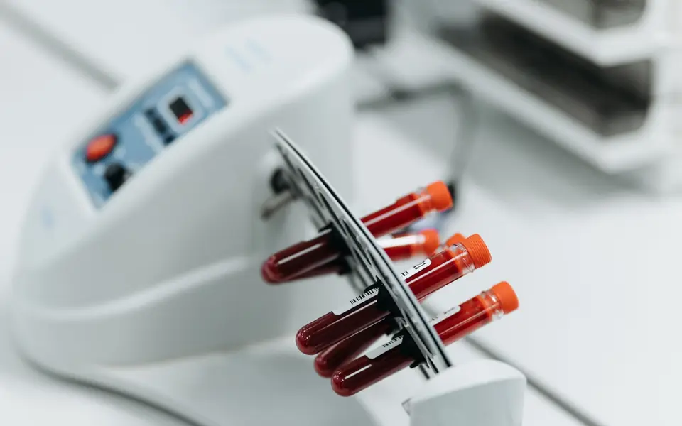

Sexual health tests
Private tests for infections passed on during sex. Know your status and get treated early.
What it is
These are tests for STDs, infections passed on during sex, such as HIV, hepatitis B, syphilis, gonorrhoea and chlamydia. Our full list: to confirm
They are done with a blood sample, a urine sample or a swab, depending on the test.
Why people do it
- Many of these infections show no signs at all, so a test is the only way to know.
- Treatment works best when it starts early.
- Before a new relationship or before marriage.
- In pregnancy, to protect the baby.
How it works at Acouns
Message or call us. You can just say the name of the test.
Come in during opening hours.
We take the sample in private.
You get your result in private. We tell you the day it will be ready. to confirm
Before you come
- Some infections take a few weeks to show on a test after contact. If you test too early, you may need to test again later.
- For some urine tests, do not pass urine for about an hour before. We tell you when you book.
Questions
Is it confidential?
Yes. Your test and your result are private.
Should my partner test too?
It is best. If one of you has an infection, both of you need treatment.
This page gives general information. It does not replace advice from your doctor. Items marked "to confirm" are being checked with Acouns.